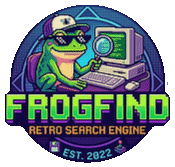

O FrogFind.de (ou .com) é um motor de busca e proxy especializado, criado por ActionRetro, que permite a computadores antigos, vintage ou com navegadores obsoletos navegarem na internet moderna. Ele converte sites complexos em HTML básico e texto, tornando-os carregáveis em dispositivos como Macs antigos, Palm Pilots e consoles.
Acesso Retro: Navegação funcional em máquinas dos anos 90/2000.
Simplificação de Conteúdo: Remove scripts modernos e CSS, exibindo apenas texto e imagens essenciais (foco em leitura).
Funcionalidade Proxy: Além da busca, permite digitar URLs para visualizá-las em formato simplificado.
Resultados de Busca: Utiliza o DuckDuckGo para entregar resultados, processando-os para navegadores leves.
Desenvolvido por Rafael Freire© - Todos os direitos reservados® - 2026